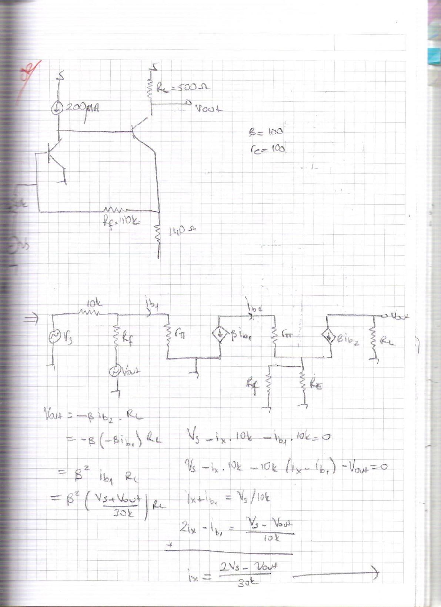
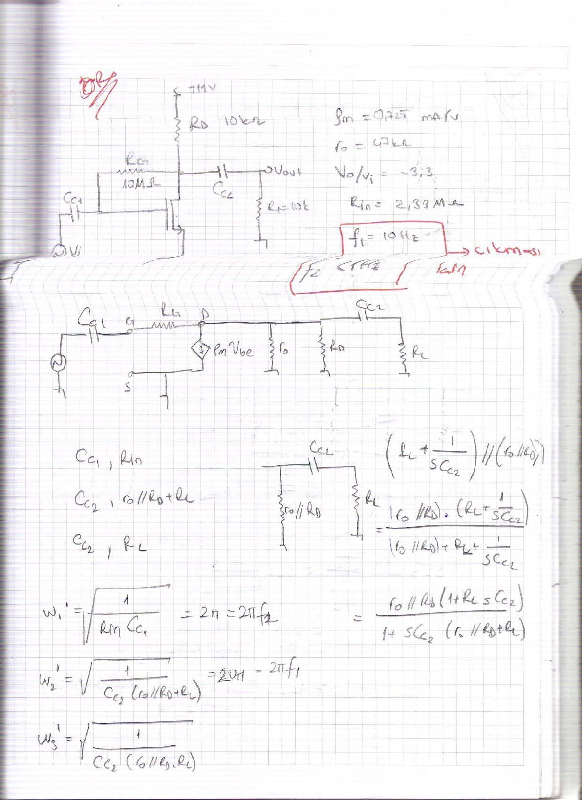
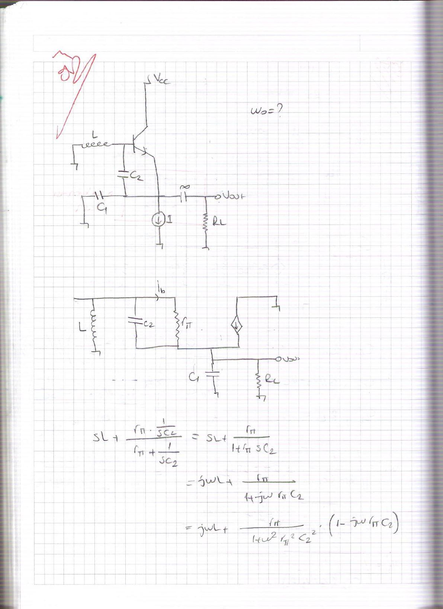
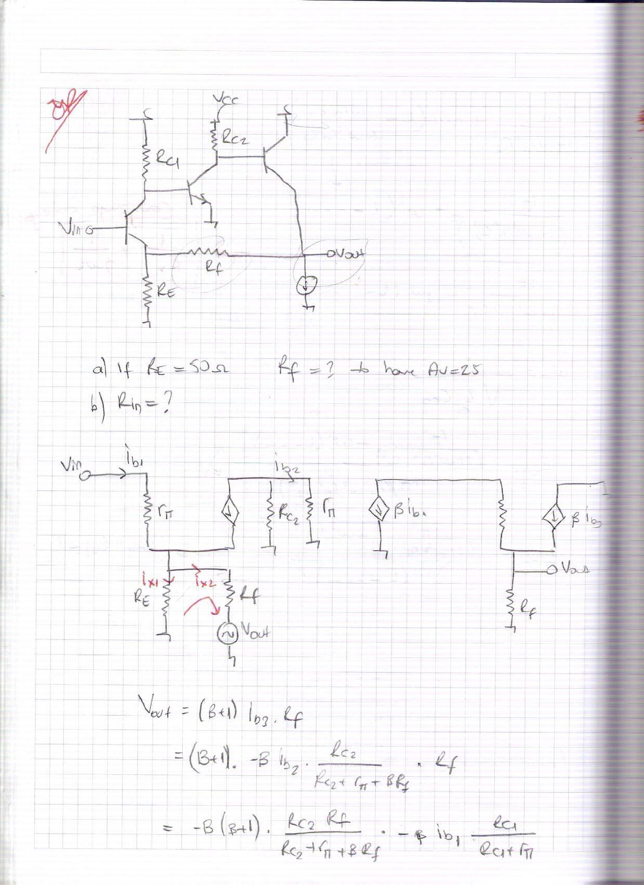

· EEM311
EEM311 Elektronik II: El Yazısı Çalışma Soruları (2012), Geri Beslemeli Yükselteçler, MOSFET Alçak Frekans Cevabı ve LC Osilatör
EEM311 – Elektronik II · 05.01.2012 · 16.10.2026
Bu yazı, 5 Ocak 2012'de taranmış yedi sayfalık el yazısı bir çalışma notunu aktarıyor. Dosyalar EEM 308 klasöründe saklanmış olsa da konular (geri beslemeli yükselteçler, frekans cevabı, osilatörler) EEM 311 Elektronik II dersine ait; tarih de dersin güz dönemi finaline denk geliyor. Sayfaların köşelerinde kırmızı kalemle soru işaretleri ve "çıkması", "çevirmeye çalış" gibi kısa notlar var; büyük olasılıkla final öncesi çözülen örnek sorular. Notu kimin yazdığı belli değil; sayfalarda ad veya numara yok. Başlıklar, ana formüller ve sonuçlar aşağıda metin olarak verildi; taranmış sayfaların tamamı yazının sonunda PDF olarak indirilebilir.
Soru 1: Akım kaynaklı geri beslemeli iki transistörlü yükselteç
Devre: Birinci transistörün kolektörü 200 μA akım kaynağıyla beslenip ikinci transistörün bazına bağlı; ikinci transistörün kolektöründe R_C = 500 Ω ve çıkış V_out, emetöründe 140 Ω; emetörden girişe R_f = 10 kΩ geri besleme direnci. β = 100, r_e = 100 (notta böyle). Küçük sinyal eşdeğerinde kaynak 10 kΩ üzerinden girişe bağlanıyor; geri besleme direnci R_f, V_out'a bağlı bir kaynak gibi modellenmiş.
Notun çözüm adımları:
V_out = −β i_b2 R_C = −β(−β i_b1) R_C = β² i_b1 R_C
V_s − i_x·10k − i_b1·10k = 0 ve V_s − i_x·10k − 10k(i_x − i_b1) − V_out = 0 denklemlerinden
i_x = (2V_s − V_out)/30k, i_b1 = V_s/10k − (2V_s − V_out)/30k = (V_s + V_out)/30k
Bu ifade V_out = β² i_b1 R_C'ye yerleştirilince
A_v = (β² R_C/30k) / (1 − β² R_C/30k) = 5·10⁶ / (30·10³ − 5·10⁶) ≈ −1
Giriş direnci için test kaynağıyla: R_in = V_s / i_x = V_s / (3V_s/30k) = 10 kΩ.

Not: Bu çözümde kullanılan küçük sinyal modeli kaba; R_in hesabındaki "3V_s/30k" adımı da i_x = (2V_s − V_out)/30k ifadesinde V_out = −V_s alınarak elde ediliyor (A_v ≈ −1 sonucundan). Sonuçlar notta yazıldığı gibi aktarıldı.
Soru 2: MOSFET ortak kaynaklı yükseltecin alt kesim frekansları
Devre: (besleme gerilimi okunmuyor) R_D = 10 kΩ, savaktan kapıya R_G = 10 MΩ geri besleme direnci, giriş kuplaj kondansatörü C_C1, çıkış kuplaj kondansatörü C_C2 ve R_L = 10 kΩ yük. Verilenler: g_m = 0,725 mA/V, r_o = 47 kΩ, V_o/V_i = −3,3, R_in = 2,33 MΩ. Kırmızı kalemle kutu içine alınmış koşullar: f₁ = 10 Hz (yanında "çıkması" notu) ve f₂ < 1 Hz; yani kuplaj kondansatörleri bu kesim frekanslarına göre seçilecek.
Kısa devre zaman sabiti yöntemiyle her kondansatörün gördüğü direnç:
- C_C1 → R_in
- C_C2 → (r_o ∥ R_D) + R_L
Çıkış düğümündeki empedans: (R_L + 1/(sC_C2)) ∥ (r_o ∥ R_D) = (r_o ∥ R_D)(1 + sR_L C_C2) / (1 + sC_C2((r_o ∥ R_D) + R_L))
Kesim frekansları:
ω₁ = 1/(R_in C_C1) = 2πf₂ ve ω₂ = 1/(C_C2((r_o ∥ R_D) + R_L)) = 2π·10 = 2πf₁
Not: Notta bu ifadeler karekök içinde yazılmış (ω = √(1/(RC))); tek kutuplu RC devresinde kesim frekansı karekök olmadan ω = 1/(RC)'dir.

Soru 3: Endüktanslı BJT osilatörünün salınım frekansı
Devre: Bazı L endüktansıyla toprağa bağlı, baz–emetör arasında C₂, emetör–toprak arasında C₁ bulunan, emetörü I akım kaynağıyla beslenen ve çıkışı büyük bir kuplaj kondansatörüyle R_L'ye alınan BJT osilatörü (Colpitts benzeri yapı). İstenen: ω₀ = ?
Küçük sinyal eşdeğerinde L, C₂ ve r_π'nin oluşturduğu kolun empedansı:
sL + (r_π · 1/(sC₂)) / (r_π + 1/(sC₂)) = sL + r_π/(1 + s r_π C₂) = jωL + r_π (1 − jω r_π C₂) / (1 + ω² r_π² C₂²) = r_π/(1 + ω² r_π² C₂²) + jω (L − r_π² C₂/(1 + ω² r_π² C₂²))
Bu seri R–L biçimi (kırmızı not: "çevirmeye çalış") paralel eşdeğere, 1/(1/R_x + 1/(jωL_x)), çevriliyor:
R_eq = [r_π²/(1 + ω² r_π² C₂²)² + ω²(L − …)²] / [r_π/(1 + ω² r_π² C₂²)]
L_eq = [r_π²/(1 + ω² r_π² C₂²)² + ω²(L − …)²] / [ω(L − …)]
Salınım koşulları: ω₀ = 1/√(L_eq C_eq) ve kazanç koşulu β(R_eq ∥ R_L) = 1 (notta böyle).

Soru 4: Üç transistörlü geri beslemeli yükselteçte Av = 25 için Rf
Devre: Ortak emetörlü birinci kat (R_C1, emetörde R_E), ortak emetörlü ikinci kat (R_C2) ve akım kaynağıyla yüklenmiş emetör izleyici çıkış katı; çıkıştan birinci katın emetörüne R_f geri besleme direnci.
- a) If R_E = 50 Ω, R_f = ? to have A_v = 25
- b) R_in = ?
Notun çözümünde çıkış:
V_out = (β + 1) i_b3 R_f = −β(β + 1) · R_C2 R_f / (R_C2 + r_π + βR_f) · i_b2, i_b2 = −β i_b1 · R_C1/(R_C1 + r_π)
Giriş tarafında geri besleme ağı için i_x1 (R_E'den) ve i_x2 (R_f'den) akımlarıyla:
V_in = i_b1 r_π + i_x1 R_E, i_x1 + i_x2 = (β + 1) i_b1, R_f i_x2 − R_E i_x1 = V_out
i_x2 = (V_out + (β + 1) i_b1 R_E)/(R_f + R_E), i_x1 = ((β + 1) i_b1 R_f − V_out)/(R_f + R_E)
V_out = 25 V_in koyularak giriş direnci:
R_in = [r_π + (β + 1)R_f/(R_f + R_E)] / [1 − 25/(R_f + R_E)]
Çıkış direnci için R_out = V_out/I_out tanımıyla i_x = i_out + i_e3 ve V_out = R_f(i_out + (β + 1) i_b3) yazılıyor; hesap notta tamamlanmamış.

Not: Sayfa 7'deki V_in ifadesinde R_E çarpanı bazı terimlerde düşmüş görünüyor (i_x1 R_E yerine i_x1 yazılmış gibi); R_in sonucu bu yüzden boyutsal olarak tutarsız (paydadaki 25/(R_f + R_E) terimi). Doğru biçimde V_in = i_b1 r_π + R_E·((β + 1) i_b1 R_f − V_out)/(R_f + R_E) olmalıdır.